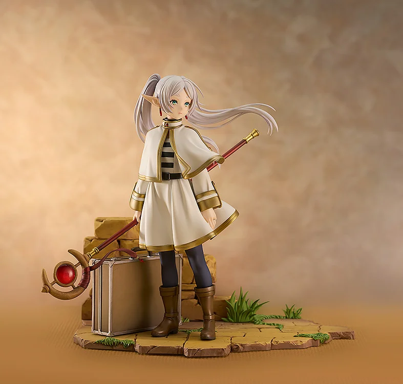
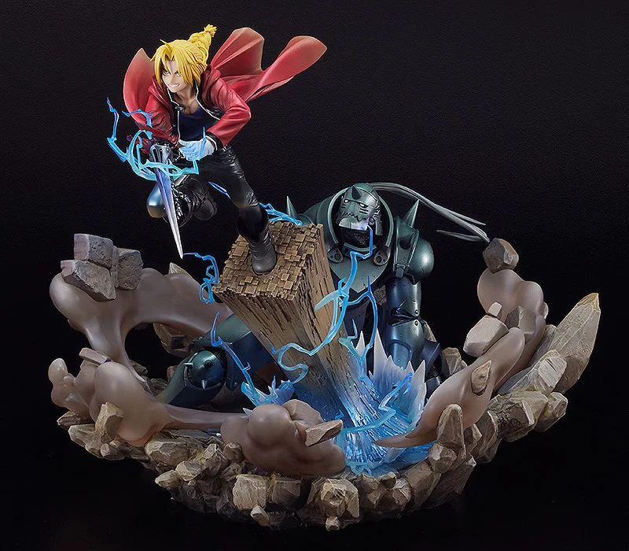

Com seus olhinhos brilhantes e detalhes meticulosos, elas trazem um sorriso ao rosto de qualquer fã. Cada figura é como um pedacinho do mundo mágico do anime, pronto para decorar e encantar qualquer coleção. É difícil resistir à fofura e ao charme dessas miniaturas que nos transportam para histórias incríveis.
Dattebayo!
Com seus olhinhos brilhantes e detalhes meticulosos, elas trazem um sorriso ao rosto de qualquer fã. Cada figura é como um pedacinho do mundo mágico do anime, pronto para decorar e encantar qualquer coleção. É difícil resistir à fofura e ao charme dessas miniaturas que nos transportam para histórias incríveis.
 Estas adoráveis figuras japonesas capturam seus personagens favoritos em miniatura, com detalhes impressionantes e poses personalizáveis. Perfeitas para colecionar e exibir, cada Nendoroid é uma obra de arte única que traz a alegria e a diversão do mundo dos animes para sua prateleira. Explore nossa seleção e encontre seu próximo Nendoroid para dar vida à sua coleção!